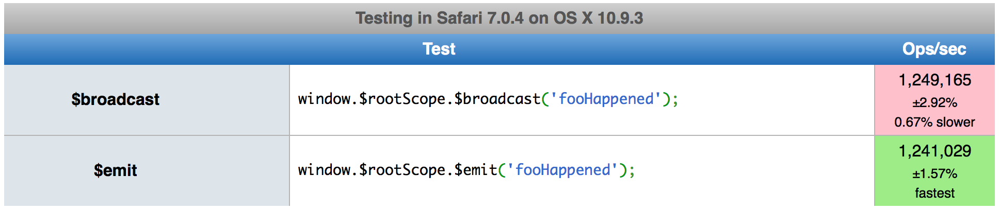
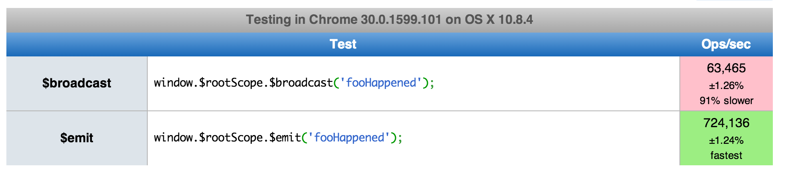

What's the correct way to communicate between controllers in AngularJS?
What's the correct way to communicate between controllers?
I'm currently using a horrible fudge involving window:
function StockSubgroupCtrl($scope, $http) {
$scope.subgroups = [];
$scope.handleSubgroupsLoaded = function(data, status) {
$scope.subgroups = data;
}
$scope.fetch = function(prod_grp) {
$http.get('/api/stock/groups/' + prod_grp + '/subgroups/').success($scope.handleSubgroupsLoaded);
}
window.fetchStockSubgroups = $scope.fetch;
}
function StockGroupCtrl($scope, $http) {
...
$scope.select = function(prod_grp) {
$scope.selectedGroup = prod_grp;
window.fetchStockSubgroups(prod_grp);
}
}
Answer
Edit : The issue addressed in this answer have been resolved in angular.js
version 1.2.7. $broadcast now avoids bubbling over unregistered scopes and
runs just as fast as $emit. 
So, now you can:
- use
$broadcastfrom the$rootScope - listen using
$onfrom the local$scopethat needs to know about the event
Original Answer Below
I highly advise not to use $rootScope.$broadcast + $scope.$on but rather
$rootScope.$emit+ $rootScope.$on. The former can cause serious
performance problems as raised by @numan. That is because the event will
bubble down through all scopes.
However, the latter (using $rootScope.$emit + $rootScope.$on) does
not suffer from this and can therefore be used as a fast communication
channel!
From the angular documentation of $emit:
Dispatches an event name upwards through the scope hierarchy notifying the registered
Since there is no scope above $rootScope, there is no bubbling happening. It
is totally safe to use $rootScope.$emit()/ $rootScope.$on() as an
EventBus.
However, there is one gotcha when using it from within Controllers. If you
directly bind to $rootScope.$on() from within a controller, you'll have to
clean up the binding yourself when your local $scope gets destroyed. This is
because controllers (in contrast to services) can get instantiated multiple
times over the lifetime of an application which would result into bindings
summing up eventually creating memory leaks all over the place :)
To unregister, just listen on your $scope's $destroy event and then call
the function that was returned by $rootScope.$on.
angular .module('MyApp') .controller('MyController', ['$scope', '$rootScope', function MyController($scope, $rootScope) { var unbind = $rootScope.$on('someComponent.someCrazyEvent', function(){ console.log('foo'); }); $scope.$on('$destroy', unbind); } ]);
I would say, that's not really an angular specific thing as it applies to other EventBus implementations as well, that you have to clean up resources.
However, you can make your life easier for those cases. For instance, you
could monkey patch $rootScope and give it a $onRootScope that subscribes
to events emitted on the $rootScope but also directly cleans up the handler
when the local $scope gets destroyed.
The cleanest way to monkey patch the $rootScope to provide such
$onRootScope method would be through a decorator (a run block will probably
do it just fine as well but pssst, don't tell anybody)
To make sure the $onRootScope property doesn't show up unexpected when
enumerating over $scope we use Object.defineProperty() and set
enumerable to false. Keep in mind that you might need an ES5 shim.
angular .module('MyApp') .config(['$provide', function($provide){ $provide.decorator('$rootScope', ['$delegate', function($delegate){ Object.defineProperty($delegate.constructor.prototype, '$onRootScope', { value: function(name, listener){ var unsubscribe = $delegate.$on(name, listener); this.$on('$destroy', unsubscribe); return unsubscribe; }, enumerable: false }); return $delegate; }]); }]);
With this method in place the controller code from above can be simplified to:
angular
.module('MyApp')
.controller('MyController', ['$scope', function MyController($scope) {
$scope.$onRootScope('someComponent.someCrazyEvent', function(){
console.log('foo');
});
}
]);
So as a final outcome of all this I highly advise you to use
$rootScope.$emit + $scope.$onRootScope.
Btw, I'm trying to convince the angular team to address the problem within angular core. There's a discussion going on here: https://github.com/angular/angular.js/issues/4574
Here is a jsperf that shows how much of a perf impact $broadcastbrings to
the table in a decent scenario with just 100 $scope's.
http://jsperf.com/rootscope-emit-vs-rootscope-broadcast

Suggest
The top answer here was a work around from an Angular problem which no longer exists (at least in versions >1.2.16 and "probably earlier") as @zumalifeguard has mentioned. But I'm left reading all these answers without an actual solution.
It seems to me that the answer now should be
- use
$broadcastfrom the$rootScope - listen using
$onfrom the local$scopethat needs to know about the event
So to publish
// EXAMPLE PUBLISHER angular.module('test').controller('CtrlPublish', ['$rootScope', '$scope', function ($rootScope, $scope) { $rootScope.$broadcast('topic', 'message'); }]);
And subscribe
// EXAMPLE SUBSCRIBER angular.module('test').controller('ctrlSubscribe', ['$scope', function ($scope) { $scope.$on('topic', function (event, arg) { $scope.receiver = 'got your ' + arg; }); }]);
Plunkers
- Regular $scope syntax (as you see above)
- new
Controller Assyntax
If you register the listener on the local $scope, it will be destroyed
automatically by $destroy itself when the associated controller is removed.